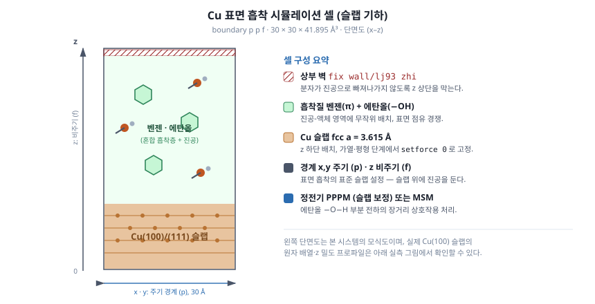
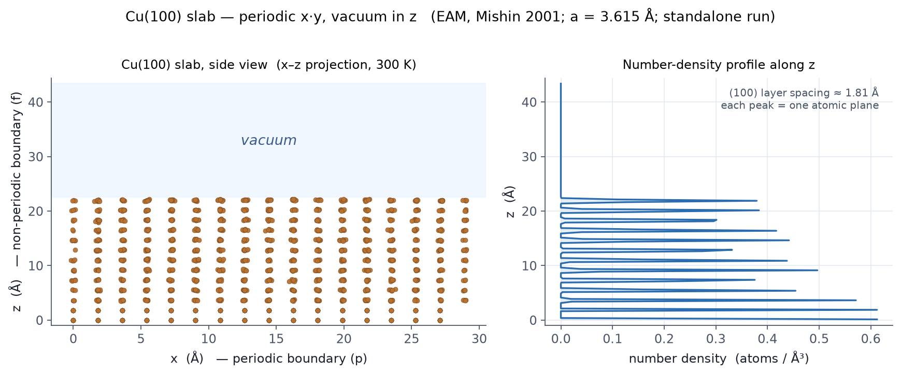

이 페이지에서 다룹니다
NOTE 33-03-00 · Cu(100) 슬랩
1. 일반 사항
A. 목적
- 이 노트는
metal단위와 EAM 포텐셜로 fcc 구리 (100) 슬랩을 만든다. - 위쪽에 진공을 둔
boundary p p f계를 300 K 에서 짧게 실행한다. - z 방향 수 밀도 프로파일을 측정한다.
B. 적용 범위
- 표면 흡착 응용 시리즈가 전제하는 "슬랩 + 진공" 기하를 가장 작은 형태로 구성한다.
- 외부 데이터 파일 없이
lattice+create_atoms로 슬랩을 만든다. - EAM 포텐셜 파일 하나만 있으면 실행된다.

C. 결과 요약
- 원자 1664개를 300 K NVT 로 약 20 ps 데운 뒤 밀도 프로파일을 측정한다.
- z-밀도 프로파일의 각 봉우리는 (100) 원자 한 층이며, 층 간격은 ≈ 1.81 Å 이다.
- 진공에서 밀도는 0 으로 떨어진다.
2. 준비 정보
A. 필요한 개념
metal단위에서 거리는 Å, 에너지는 eV, timestep 은 ps 임을 알아야 한다. 이 노트의 0.002 ps 는 2 fs 다.
B. 참조 자료
| 참조 | 제목 |
|---|---|
| 응용 · 1. 시스템 개요 | 슬랩 기하와 결정면 |
| 04 시스템 정의 | lattice · create_atoms |
| 05 상호작용 모델 | EAM 등 pair_style |
| Mishin et al., Phys. Rev. B 63, 224106, 2001 | Cu_mishin1.eam.alloy 포텐셜 |
C. 사용 프로그램
| 항목 | 용도 |
|---|---|
LAMMPS (lmp) |
시뮬레이션 실행. 4.A 의 결과는 LAMMPS 22 Jul 2025 기준이다. |
pair_style eam/alloy |
EAM 상호작용 |
D. 관련 파일
| 항목 | 내용 |
|---|---|
in.cu_slab |
입력 스크립트 (3.A 에서 작성) |
Cu_mishin1.eam.alloy |
EAM 포텐셜 (lammps.org 배포 포텐셜, Mishin 2001). 구리 응집 에너지 −3.54 eV/atom 을 재현한다. |
3. 절차
A. 입력 작성: in.cu_slab
- 아래 내용으로
in.cu_slab를 작성한다.
# Cu(100) 슬랩 — 슬랩+진공 기하 (NOTE 32-01-00 3.B 예시)
units metal
atom_style atomic
boundary p p f
lattice fcc 3.615
region sim block 0 8 0 8 0 12 units lattice
create_box 1 sim
region slab block 0 8 0 8 0 6 units lattice
create_atoms 1 region slab
mass 1 63.546
pair_style eam/alloy
pair_coeff * * Cu_mishin1.eam.alloy Cu
# 하단 두 면(z < 0.6a = 2.17 A) 고정, 나머지는 열욕
region bot block INF INF INF INF 0 0.6 units lattice
group bottom region bot
group mobile subtract all bottom
velocity mobile create 300.0 4928459 mom yes rot yes dist gaussian
fix freeze bottom setforce 0.0 0.0 0.0
fix integ mobile nvt temp 300.0 300.0 0.1
timestep 0.002
thermo 500
thermo_style custom step temp pe etotal press
run 10000
# z 방향 수 밀도 프로파일
reset_timestep 0
compute cc all chunk/atom bin/1d z lower 0.25 units box
fix zd all ave/chunk 100 50 5000 cc density/number file zdens.dat
run 5000
write_dump all custom slab_final.dump id type x y z modify sort id
- 셀 높이를 확인한다.
region sim은 z 를 12셀(약 43 Å)까지 잡는다. - 슬랩 높이를 확인한다. 원자는 아래 6셀(약 22 Å)에만 만들어지고 위쪽 절반은 진공으로 남는다.
boundary p p f로 x·y 는 주기, z 는 비주기임을 확인한다.- 하단 두 면(z = 0, 1.81 Å, 256원자)이
setforce 0으로 고정되는지 확인한다.
참고
하단 층 고정(setforce 0)은 슬랩이 z 방향으로 떠내려가는 표류를 막는 관용적인 방법이다. compute chunk/atom bin/1d z + fix ave/chunk 조합으로 z 방향 밀도 프로파일을 얻는다.
B. 실행
주의
포텐셜 파일 Cu_mishin1.eam.alloy 를 입력과 같은 디렉토리에 두어야 한다.
- EAM 포텐셜
Cu_mishin1.eam.alloy를 받는다. - 입력을 실행한다.
# EAM 포텐셜을 먼저 받는다 (lammps.org 배포 포텐셜)
# Cu_mishin1.eam.alloy (Mishin et al., Phys. Rev. B 63, 224106, 2001)
lmp -in in.cu_slab > out.cu_slab
C. 출력 확인
out.cu_slab,zdens.dat,slab_final.dump가 생겼는지 확인한다.
4. 시험 및 검사
A. 슬랩 구조와 z 밀도 프로파일
- 원자 수가 1664개인지 확인한다.
- 측면도(x–z 투영)를 그린다. 하단에 이산적인 Cu 원자층이 있고 그 위가 진공이어야 한다.
zdens.dat의 z-밀도 프로파일을 그린다. 각 봉우리가 (100) 원자 한 층이며, 층 간격은 ≈ 1.81 Å 이다.- 진공 구간에서 밀도가 0 으로 떨어지면 합격이다.

5. 종료
A. 결과 정리
metal단위에서 거리는 Å, 에너지는 eV, timestep 은 ps 다(여기서 0.002 ps = 2 fs).boundary p p f+ 위쪽 진공은 표면 흡착 시뮬레이션에서 흔히 쓰는 슬랩 설정이다.compute chunk/atom bin/1d z+fix ave/chunk로 z 방향 밀도 프로파일을 얻는다.- 하단 층 고정(
setforce 0)은 슬랩 표류를 막는 관용적인 방법이다.
B. 후속 작업
- 유기 분자와 상부 벽을 추가한 응용 계는 응용 · 1. 시스템 개요에서 다룬다.